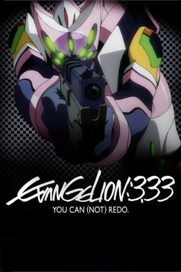

#2098 Evangelion: 3.0 You Can (Not) Redo
 
 IMDB-Wertung: 7.0 / 10
IMDB-Wertung: 7.0 / 10  Metascore: 0
Metascore: 0 
Vierzehn Jahre sind nach dem Third Impact vergangen, doch die Menschheit wird immer noch von den Engeln attackiert. Shinji Ikari wird aus Evangelion Einheit-01 geborgen und erkennt, dass sich Dinge geändert haben, jedoch nicht zum Besseren: Die Welt wurde verwüstet und seine ehemals Verbündeten von NERV haben sich ihm und Rei Ayanami gegenüber feindlich eingestellt. (Wikipedia)
Jahr: 2012
Dauer: 96 Minuten
FSK: 16
Land: Japan Studio: UFATonspuren: DTS - ,
Untertitel: Deutsch,
Auflösung: 1080p (1920x816) Größe: 3788 MB
Genre: Action, Drama, Sci-Fi, Animation/Trick
Regisseur: Mahiro Maeda, Masayuki, Kazuya Tsurumaki, Hideaki Anno
Drehbuch: Hideaki Anno
Soundtrack: Shiro Sagisu
Darsteller:
Datei: X:\HD-Anime-Collections\Evangelion\Evangelion 3.0 You Can (Not) Redo (2012, FSK16, 1920x816).mkv seit 02.10.2015
Festplatte: Gemischt-01+Anime
 Alle Filme aus Gruppe 'HD-Anime-Collections\Evangelion'
Alle Filme aus Gruppe 'HD-Anime-Collections\Evangelion'